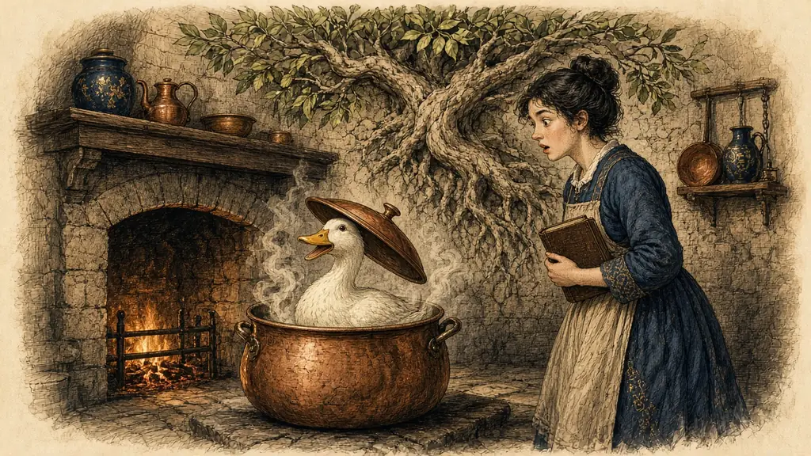

An experiment at Stanford, a duck in a cooking pot, and how ten Latin roots unlock thousands of English words.

← Market Day · The whole course · Verbs That Misbehave →
In the early 1970s two psychologists at Stanford University, Richard Atkinson and Michael Raugh, wanted to know whether a very old idea could help with a very modern problem: learning the words of a foreign language. They chose a hard test. Russian vocabulary, for an English speaker, is full of unfamiliar sounds, written in an unfamiliar alphabet.
They divided their students into groups. One group learned the words in the usual way, by repeating them. The other group was taught to make a picture for each word. The students did not know that the pictures were the experiment.
The picture was built in two steps. First, take the foreign word, and find a word in your own language that sounds a little like it. This is the keyword. Second, make a vivid picture in which the keyword and the meaning of the foreign word are doing something together.
Here is an example from Spanish. The word pato means duck. It sounds a bit like the English word pot. So you picture a duck sitting in a cooking pot, wearing it like a hat, with steam coming out. When you see pato you think of pot, and the duck is in the picture. The meaning is there, because you built it.
The students who used the method remembered far more words than the others. The result was reported in the mid 1970s, and the method has been tested many times since. It is not magic, and it works best for words you can picture. But for the thousands of words you need to learn in any new language, it gives you a start that repetition alone does not.
English has a second trick for hard words. A great many of its long words are built from a small set of Latin roots. Learn ten roots, and a whole page of difficult vocabulary becomes readable. In this lesson you will do both: the keyword method for foreign words, and roots for English.
Say what you think each one means, then open it.
The keyword method was tested by Richard Atkinson and Michael Raugh at Stanford in the 1970s. Retold here in our own words.
| Word | Meaning | Keyword | Scene |
|---|---|---|---|
| pato (Spanish) | duck | pot | A duck wearing a cooking pot as a hat |
| caballo (Spanish) | horse | cab + eye | A horse with one huge eye, driving a taxi |
| mesa (Spanish) | table | mess | A table covered in a terrible mess |
| gato (Spanish) | cat | got-oh | A cat shouting 'I got it!' with a fish in its mouth |
| pugnacious (English) | wanting to fight | pug + nasty | A nasty little pug dog picking a fight |
A root is the part of the word that carries the meaning. Learn the root and the word becomes readable. Prefixes (re-, trans-, con-) change the direction.
| Root | Means | Some words |
|---|---|---|
| duc / duct | lead | conduct, produce, deduce, aqueduct |
| spec / spect | look | inspect, spectacle, prospect, respect |
| port | carry | transport, import, export, portable, report |
| scrib / script | write | describe, manuscript, subscribe, prescription |
| aud | hear | audience, audible, audio, audit |
| vid / vis | see | video, visible, vision, evidence |
| dict | say | predict, dictate, contradict, verdict |
| mit / miss | send | submit, transmit, mission, dismiss |
| ject | throw | reject, project, inject, object |
| tract | pull | attract, extract, tractor, subtract |
Have a go before you open any answer. A rough attempt teaches you more than a perfect model you only read.
Say the answer first, then tap the card.
Learn the ten roots in order, with their meanings. Make one scene for each, in a ten-place palace. Type each root back, one per line.
One place per root: a duck leading ducklings (duc), a pair of glasses looking (spec)...
The list has gone. Type what you remember, one item per line.
These reach back to earlier rooms. Answer in your head or out loud, then check.
Which five words from another language do you most want to learn? What is the keyword for each?